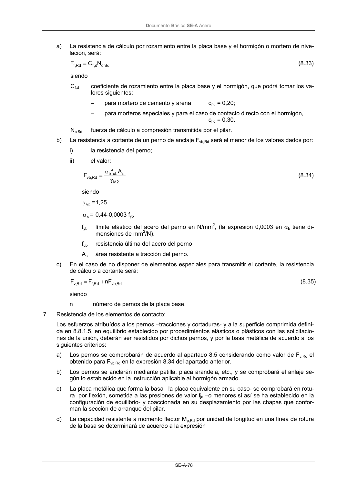

DB-SE-A Acero · edición 2007-10-23 · capa oficial
Documento DB-SE-A-oficial · SHA-256 del PDF 9ed9ea694aabfbda3bfbbef40dfe9223fde05d13c35bc2ba9751e5a96a22a64f
Página física 80 de 168.
Copia fiel del PDF fuente · Fuente oficial
Ficha de la disposición en la fuente oficial
Formato: Texto de la página (Markdown)
Documento Básico SE-A Acero SE-A-78 a) La resistencia de cálculo por rozamiento entre la placa base y el hormigón o mortero de nive- lación, será: Sd ,c d ,f Rd ,f N C F = (8.33) siendo Cf,d coeficiente de rozamiento entre la placa base y el hormigón, que podrá tomar los va- lores siguientes: – para mortero de cemento y arena cf,d = 0,20; – para morteros especiales y para el caso de contacto directo con el hormigón, cf,d = 0,30. Nc,Sd fuerza de cálculo a compresión transmitida por el pilar. b) La resistencia a cortante de un perno de anclaje Fvb,Rd será el menor de los valores dados por: i) la resistencia del perno; ii) el valor: 2 M s ub b Rd , vb A f F γ α = (8.34) siendo 2 M γ = 1,25 b α = 0,44-0,0003 fyb fyb límite elástico del acero del perno en N/mm2, (la expresión 0,0003 en αb tiene di- mensiones de mm2/N). fub resistencia última del acero del perno As área resistente a tracción del perno. c) En el caso de no disponer de elementos especiales para transmitir el cortante, la resistencia de cálculo a cortante será: Rd , vb Rd ,f Rd , v nF F F + = (8.35) siendo n número de pernos de la placa base. 7 Resistencia de los elementos de contacto: Los esfuerzos atribuídos a los pernos –tracciones y cortaduras- y a la superficie comprimida defini- da en 8.8.1.5, en equilibrio establecido por procedimientos elásticos o plásticos con las solicitacio- nes de la unión, deberán ser resistidos por dichos pernos, y por la basa metálica de acuerdo a los siguientes criterios: a) Los pernos se comprobarán de acuerdo al apartado 8.5 considerando como valor de Fv,Rd el obtenido para Fvb,Rd en la expresión 8.34 del apartado anterior. b) Los pernos se anclarán mediante patilla, placa arandela, etc., y se comprobará el anlaje se- gún lo establecido en la instrucción aplicable al hormigón armado. c) La placa metálica que forma la basa –la placa equivalente en su caso- se comprobará en rotu- ra por flexión, sometida a las presiones de valor fjd –o menores si así se ha establecido en la configuración de equilibrio- y coaccionada en su desplazamiento por las chapas que confor- man la sección de arranque del pilar. d) La capacidad resistente a momento flector Mp,Rd por unidad de longitud en una línea de rotura de la basa se determinará de acuerdo a la expresión
